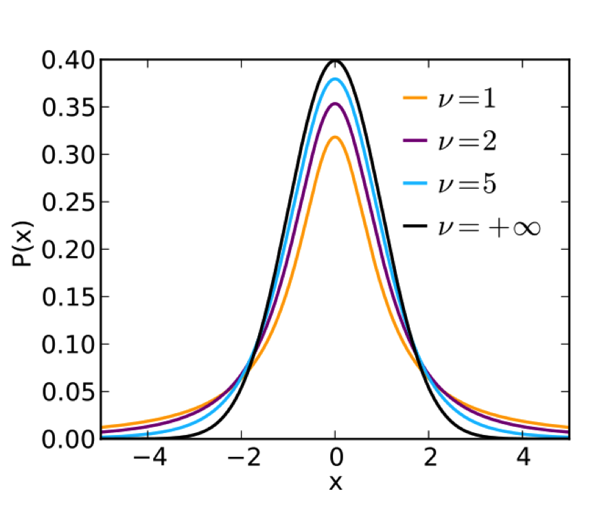
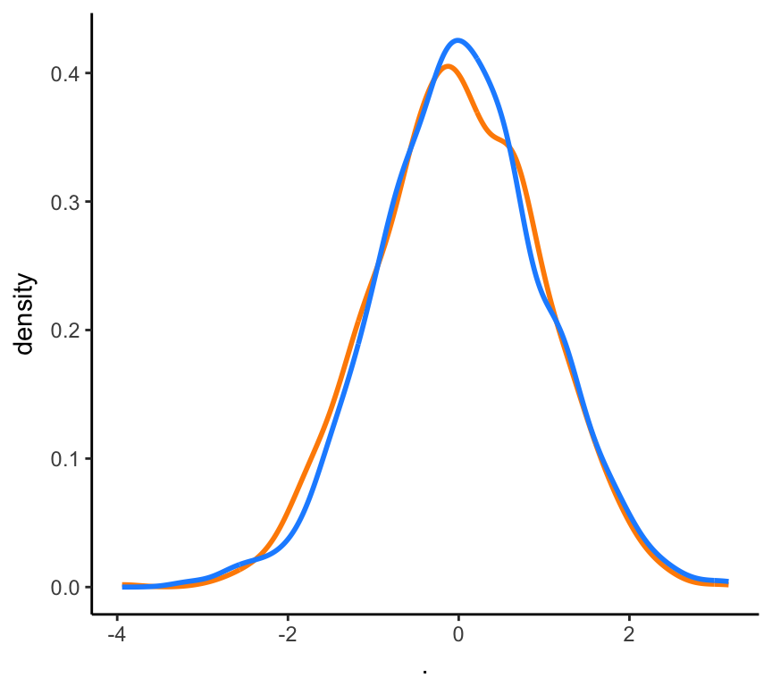
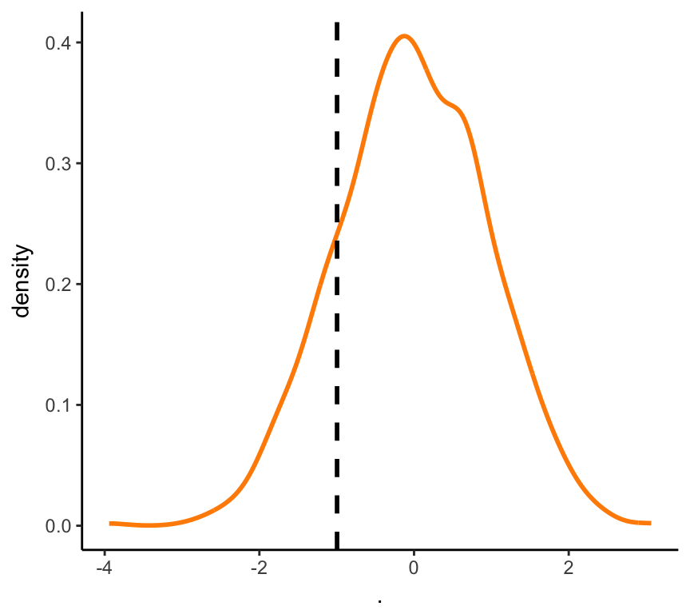
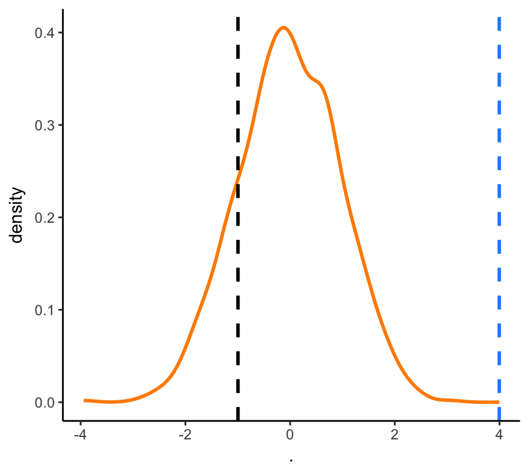
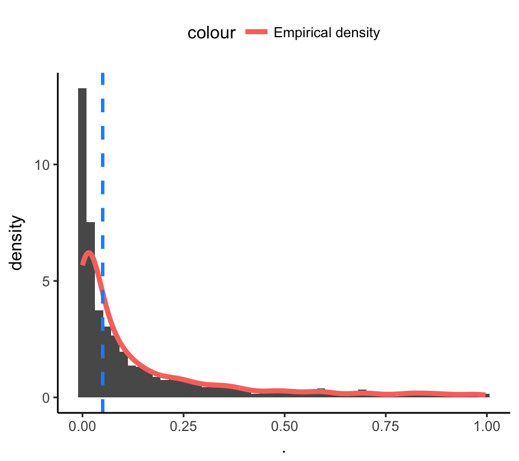
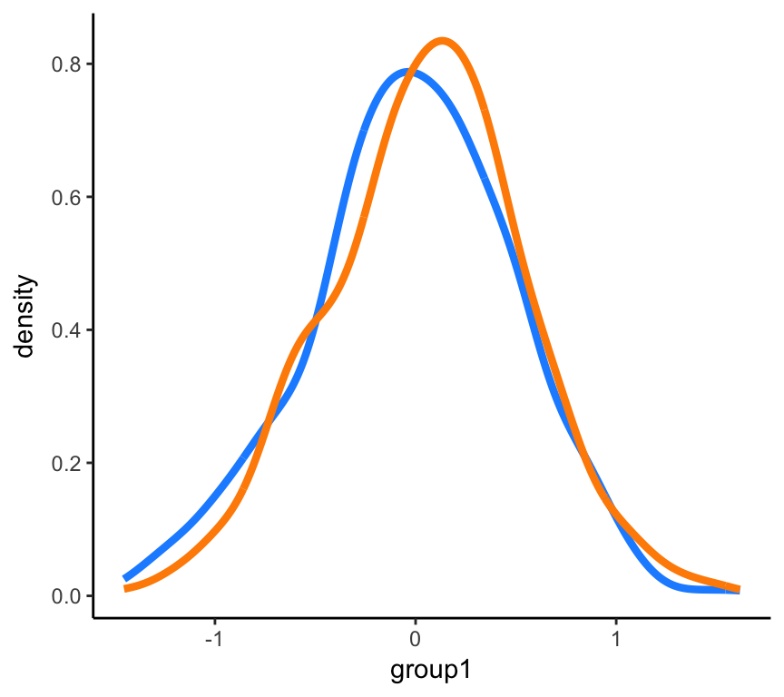

Chapter: 4 T-test
4.1 The t-test (what, why, and how)
The t-test refers to a widely-used set of statistical tools that help us to determine whether two values are “actually” different from each other. (Note the “actually” part will become more clear when we dive into the topic of p-values.) It was developed by William Gosset as a method of statistical quality control to monitor the quality of stout production (there’s a neat backstory that I recommend reading!).
4.1.1 How to compute a t-statistic?
The algorithm for computing a t-statistic is as follows:
First, we need to determine the null and the alternative hypothesis. This will depend on the type of comparison you want to make. For example, Let’s imagine that you have taken a series of measures on a single group (e.g., NBA players’ heights). You might be interested in testing whether the average height of an NBA player is different from the average height of the general population in the United States. In this scenario, your null hypothesis, \(H_0\), is that the average heights are not different from each other, and your alternative hypothesis, \(H_a\), is that the two groups are different. (IMPORTANT: here we are just saying that the groups could be different in some way, meaning the NBA players could be shorter OR taller on average.)
Second, we need to compute the values that will be in the input to the t-test computation. Here is the formula for a one-sample t-test:
\[t = \frac{\bar{x} - u_0} {s / \sqrt{n}}\]
Let’s code up the one-sample t-test as a function.
t_test_fun <- function(measurements, null_val) {
xbar <- mean(measurements)
s <- sd(measurements)
n <- length(measurements)
# compute t-statistic
(xbar - null_val) / (s / sqrt(n))
}Let’s try our t-test function and compare the output ot R’s built-in t.test() function.
# simulate some data as samples from a normal distribution
samples <- rnorm(n = 100, mean = 6, sd = 1.5)
our_t <- t_test_fun(measurements = samples, null_val = 6)
# R's built-in t-test function
Rs_t <- t.test(x = samples, mu = 6)$statisticOur t-statistic is -0.9956524 and R’s is -0.9956524. Nice! Our function worked and returned the expected t-statistic.
But a t-statistic by itself is not all that useful in helping us to decide whether there is a difference between our measurements and the null value. In the next section, we will show how to use a t-statistic to make decisions (draw inferences) about our data.
4.1.2 How do we use a t-statistic?
To understand how we use a t-statistic, we need to understand the t-distribution. As always Wikipedia provides a useful description:
Student’s t-distribution (or simply the t-distribution) is any member of a family of continuous probability distributions that arises when estimating the mean of a normally distributed population in situations where the sample size is small and population standard deviation is unknown. It was developed by William Sealy Gosset under the pseudonym Student. Whereas a normal distribution describes a full population, t-distributions describe samples drawn from a full population; accordingly, the t-distribution for each sample size is different, and the larger the sample, the more the distribution resembles a normal distribution.
There’s a lot of information in that description! Let’s unpack it.
The t-distribution is described by three parameters: the mean (location), the standard deviation (spread), and the degrees of freedom (area in the tails).2 Here’s what the t-distribution looks like for several different values of degrees of freedom.

The key parameter for the t-distribution is degrees of freedom (df). Note that a smaller df value creates a distribution with more area in the tails (shorter and wider) than one with a larger df value. Intuitively, this means that you would need a larger t-statistic to achieve the same probability to reject the null hypothesis that the observed mean in our sample is different from the null value.
The key insight about the t-distribution is that it provides the expected distribution of t-statistics if we assumed that the null hypothesis was true (that there is no difference between our sample measurments and the population value). Let’s use our simulation skills to test this.
t_sims_null <- replicate(n = 1000,
t.test(x = rnorm(n = 100, mean = 0, sd = 1), mu = 0)$statistic) %>%
data.frame()
ggplot(aes(x = .), data = t_sims_null) +
geom_line(stat="density", size = 1, color = "darkorange") +
geom_line(aes(x = rt(n = 1000, df = 99)), stat = "density",
color = "dodgerblue", size = 1)
Now when we compute a t-statistic for our sample, the question we will ask is: how likely is this t-statistic if we assume that the null hypothesis is true. And since we now have an expected probability distribution of t-statistics, we can compare where our t-value falls in this distribution. Intuitively, if it is towards the center of the probability distribution (where there is a lot of probability mass), then it is more likely that our sample t-value was generated from same process that generated the null distribution.
To actually do this in R, we can use the pt() function, which returns the probability of
2*pt(-abs(our_t), df = length(samples) - 1) == t.test(x = samples, mu = 6)$p.value## [1] TRUEWe can also visualize the location of our t-statistic relative to the null t-distribution.
ggplot(aes(x = .), data = t_sims_null) +
geom_line(stat = "density", size = 1, color = "darkorange") +
geom_vline(xintercept = our_t, linetype = "dashed", size = 1)
We can see that the location of our t-statistic is not very far out in the tails of the distribution, meaning that it is unlikely that our measurements were generated by a process that was different from the process that generated the collection of t-statistics in the null distribution (if we assume that there is no difference).
But what would a t-statistic look like if there was a difference between our sample and the population value?
samples2_nba <- rnorm(n = 100, mean = 6.5, sd = 1.5)
sig_t <- t.test(x = samples2_nba, mu = 6)$statisticggplot(aes(x = .), data = t_sims_null) +
geom_line(stat = "density", size = 1, color = "darkorange") +
geom_vline(xintercept = our_t, linetype = "dashed", color = "black", size = 1) +
geom_vline(xintercept = sig_t, linetype = "dashed", color = "dodgerblue", size = 1)
4.2 Comparing samples from two different groups
\[t = \frac{\bar{x_1} - \bar{x_2}} {s_p \sqrt{2/n}}\]
Where \(s_p\) is the pooled standard deviation that we use to etsimate the variance of the two populations that we are sampling from.
\[s_p = \sqrt{\frac{s^2_{x_1} + s^2_{x_2}}{2}}\]
Next, let’s write a function that allows us to simulate an experiment where we collect from two different groups and we want to know whether there is likely to be a difference between the two groups. To answer this question, we perform a two-sample, independent t-test on the mean difference between the groups.
sim_two_samp_ttest <- function(n_samps, m1, sd1, m2, sd2, paired = FALSE) {
group1 <- rnorm(n = n_samps, m = m1, sd = sd1)
group2 <- rnorm(n = n_samps, m = m2, sd = sd2)
t.test(group1, group2, paired = paired)$p.value
}replicate(1000,
sim_two_samp_ttest(n_samps = 200, m1 = 5, sd1 = 0.5, m2 = 5.1, sd2 = 0.5)) %>%
data.frame() %>%
ggplot(aes(.)) +
geom_histogram(aes(y = ..density..), bins = 50) +
geom_line(aes(y = ..density.., color = "Empirical density"), stat = 'density',
size = 1.5) +
geom_vline(xintercept = .05, linetype = "dashed", color = "dodgerblue", size = 1) +
theme(legend.position = "top")
4.3 Exploring the normality assumption of the t-test
The t-test assumes that the underlying process generates data that follows a normal distribution. This makes sense since we have to make these assumptions in order to generate a distribution of expected t-statistics if the null were true.
Using simulation we can see what happens to the t-stastic as our data depart from this normality assumption. First, let’s simulate measurements from two groups as samples from two normal distributions with different mean parameters.
group1 <- rnorm(n = 500, m = 0, sd = 0.5)
group2 <- rnorm(n = 500, m = 0.1, sd = 0.5)Always a good idea to visualize these data.
ggplot() +
geom_line(aes(group1), stat = "density", color = "dodgerblue", size = 1.5) +
geom_line(aes(group2), stat = "density", color = "darkorange", size = 1.5)
What do you think? Are these groups differnt from each other? Tricky, right? Let’s do a t-test to see how likely this difference is compared to the null hypothesis of no difference between the two groups.
t.test(x = group1, y = group2, paired = F)##
## Welch Two Sample t-test
##
## data: group1 and group2
## t = -2.1399, df = 997.18, p-value = 0.0326
## alternative hypothesis: true difference in means is not equal to 0
## 95 percent confidence interval:
## -0.129675133 -0.005613819
## sample estimates:
## mean of x mean of y
## -0.01376446 0.05388002Formally, degrees of freedom are the number of values in the final calculation of a statistic that are free to vary.↩